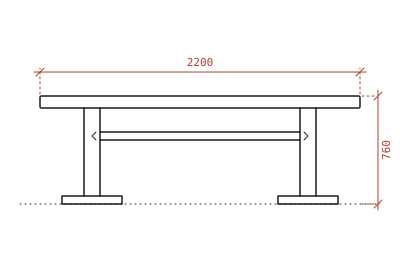
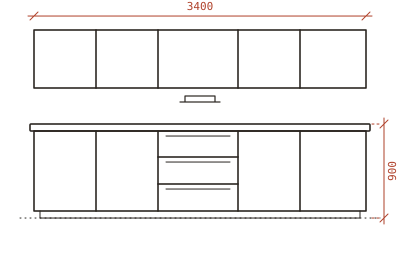
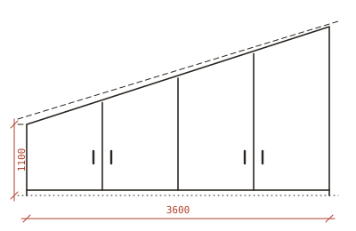
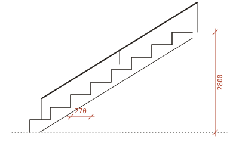
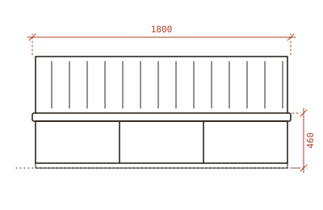
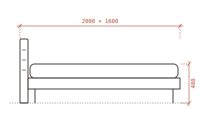

Tischlerei in Bad Radkersburg · seit 1987
Möbel, die auf den Zentimeter in Ihren Raum passen.
Wir messen bei Ihnen zu Hause, zeichnen jedes Stück selbst und bauen es in unserer Werkstatt aus Holz, das größtenteils aus der Südsteiermark kommt. Eingebaut wird von denselben Leuten, die es gebaut haben.
Werkstatt: Mo–Do 7–16 Uhr, Fr 7–12 Uhr
- Projekt
- Esstisch, Fam. W., Straden
- Maßstab
- 1:20
- Gezeichnet
- M. Kogler
- Blatt
- 1 / 4
- 3 + 1Tischler und ein Lehrling
- 60 kmmaximaler Weg vom Sägewerk zu uns
- 0 €fürs Aufmaß bis 30 km Entfernung
- 5 JahreGarantie auf alle Beschläge
Blatt 2
Letzte Arbeiten
Jedes Stück beginnt als Zeichnung. Hier sind ein paar davon – mit Holz, Maßen und wie lange wir gebraucht haben.
-

Langer Tisch für zehn Leute
Die Familie wollte keine Beine im Weg – deshalb ein Wangengestell, das man beim Hinsetzen nicht spürt.
- Holz
- Eiche, geölt
- Maße
- 220 × 100 cm
- Bauzeit
- 3 Wochen
- Ort
- Straden
-

Küche ohne einen einzigen Griff
Gefräste Griffmulden statt Griffe, Arbeitsplatte aus Eiche, Fronten aus Esche. Geschirrspüler und Kühlschrank sind hinter Holzfronten versteckt.
- Holz
- Esche, weiß geölt
- Breite
- 3,40 m
- Bauzeit
- 7 Wochen
- Ort
- Klöch
-

Schrank unter der Dachschräge
Der Platz, den es im Möbelhaus nicht gibt: vier Türen, jede auf die Schräge zugeschnitten, innen Auszüge statt Fachböden.
- Holz
- Esche, Fronten lackiert
- Breite
- 3,60 m
- Einbau
- 1 Tag
- Ort
- Mureck
-

Treppe ins ausgebaute Dachgeschoß
Aufgesattelte Stufen aus Lärche, 18,5 cm Steigung – angenehm auch mit dem Wäschekorb in der Hand.
- Holz
- Lärche, geölt
- Höhe
- 2,80 m
- Bauzeit
- 4 Wochen
- Ort
- Tieschen
-

Sitzbank mit Stauraum
Drei Deckel zum Aufklappen, darunter Platz für Tischwäsche und Spiele. Die Rückenlehne ist schräg gestellt, weil man sonst nicht lange sitzt.
- Holz
- Nuss, geölt
- Länge
- 1,80 m
- Bauzeit
- 2 Wochen
- Ort
- Halbenrain
-

Zirbenbett ohne Metall
Verbunden mit Holzdübeln und Keilen, ganz ohne Schrauben. Man riecht die Zirbe noch Monate später.
- Holz
- Zirbe, unbehandelt
- Liegefläche
- 160 × 200 cm
- Bauzeit
- 3 Wochen
- Ort
- Deutsch Goritz
In dieser Kategorie gibt es gerade nichts zu zeigen.
Blatt 3
Was kostet ein Esstisch?
Die häufigste Frage am Telefon. Stellen Sie sich Ihren Tisch zusammen – der Richtwert ändert sich sofort.
Blatt 4
So läuft ein Auftrag ab
-
Woche 1
Aufmaß bei Ihnen
Wir kommen vorbei, messen aus und schauen uns an, wie Sie den Raum nutzen. Dauert etwa eine Stunde. Im Umkreis von 30 km kostenlos.
-
innerhalb von 10 Tagen
Zeichnung & Angebot
Sie bekommen eine Zeichnung mit allen Maßen und einen Fixpreis. Änderungen an der Zeichnung kosten nichts, solange noch kein Holz geschnitten ist.
-
3 bis 8 Wochen
Bau in der Werkstatt
Sie können jederzeit vorbeischauen und das Holz aussuchen. Viele Kundinnen und Kunden machen das auch.
-
meist 1 Tag
Einbau
Wir bauen ein, stellen nach und nehmen den Abfall wieder mit. Bezahlt wird erst, wenn alles passt.
Werkstatt
Mein Vater hat 1987 mit einer Hobelbank in der Garage angefangen.
Heute arbeiten wir zu viert in einer Werkstatt am Ortsrand. Wir bauen keine Serien und haben keinen Katalog – fast alles, was die Werkstatt verlässt, gibt es nur einmal.
Das Holz kaufen wir bei zwei Sägewerken in der Gegend und lassen es bei uns nachtrocknen. Bei Eiche dauert das manchmal länger als der Bau selbst.
Martin Kogler, Tischlermeister
- Eichehart, für Tische und Treppen
- Nussdunkel, für Einzelstücke
- Eschehell und zäh, für Küchen
- Lärcheharzig, auch für draußen
- Zirbeduftet, für Schlafzimmer
Häufige Fragen
Machen Sie auch Reparaturen?
Ja, wenn es sich lohnt. Wackelige Stühle, klemmende Laden und abgenutzte Tischplatten schauen wir uns gern an. Spanplatten-Möbel reparieren wir in der Regel nicht.
Kann ich das Holz selbst aussuchen?
Unbedingt. Bei Tischplatten empfehlen wir es sogar – keine zwei Bretter sehen gleich aus.
Wie weit fahren Sie zum Einbauen?
Meistens arbeiten wir in der Südoststeiermark und im Raum Graz. Weiter weg geht auch, dann verrechnen wir die Anfahrt.
Wie pflege ich einen geölten Tisch?
Feucht abwischen, keine Mikrofasertücher. Ein- bis zweimal im Jahr nachölen – das Öl bekommen Sie von uns mit.
Kontakt
Erzählen Sie uns, was Sie vorhaben.
Ein Foto vom Raum und ungefähre Maße helfen uns schon sehr. Wir melden uns innerhalb von zwei Werktagen.
- Telefon
- 03476 000 000
- werkstatt@kogler.example
- Werkstatt
- Musterweg 7, 8490 Bad Radkersburg